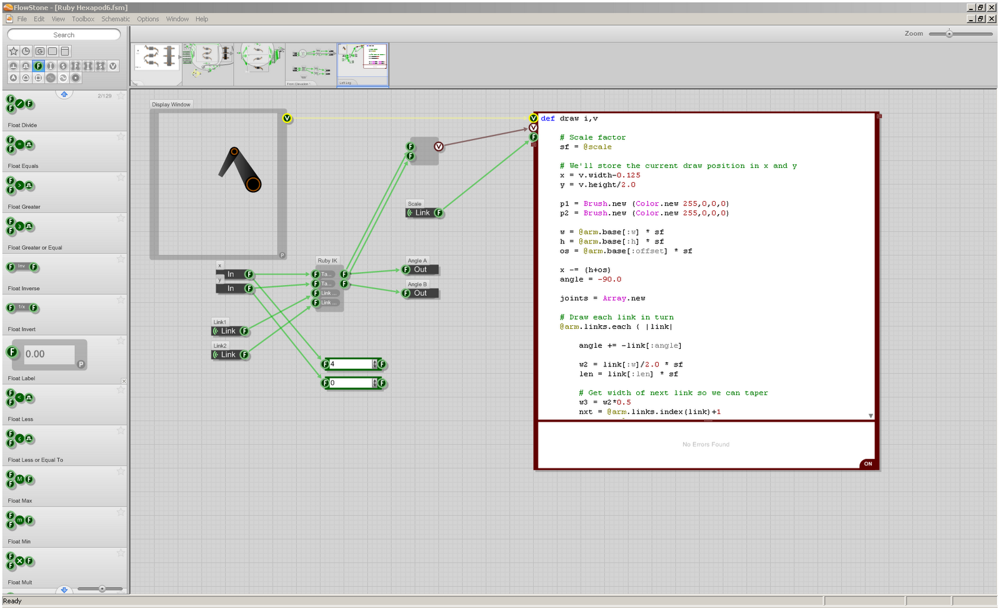
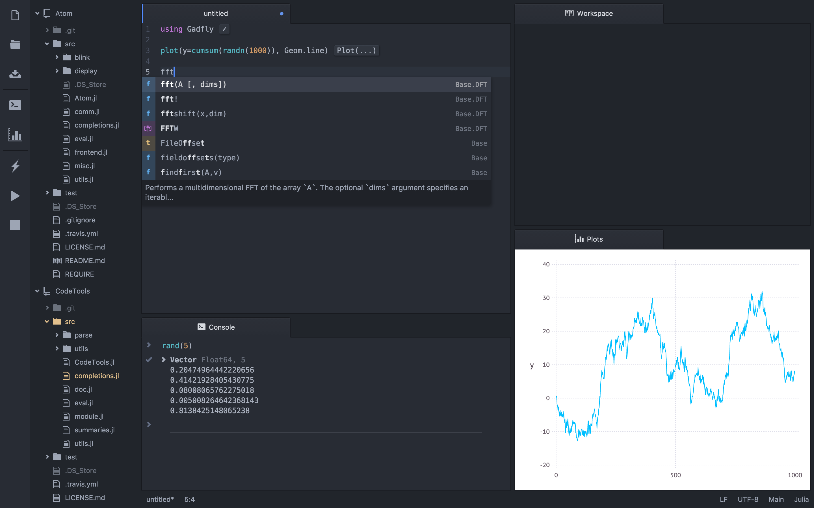
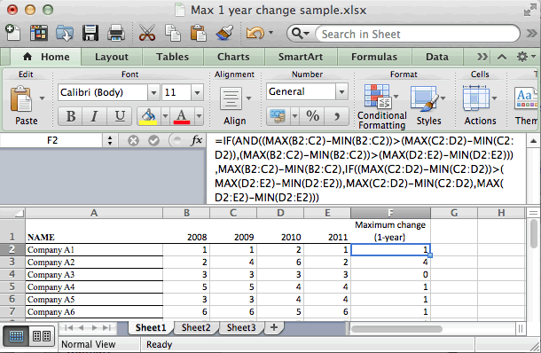
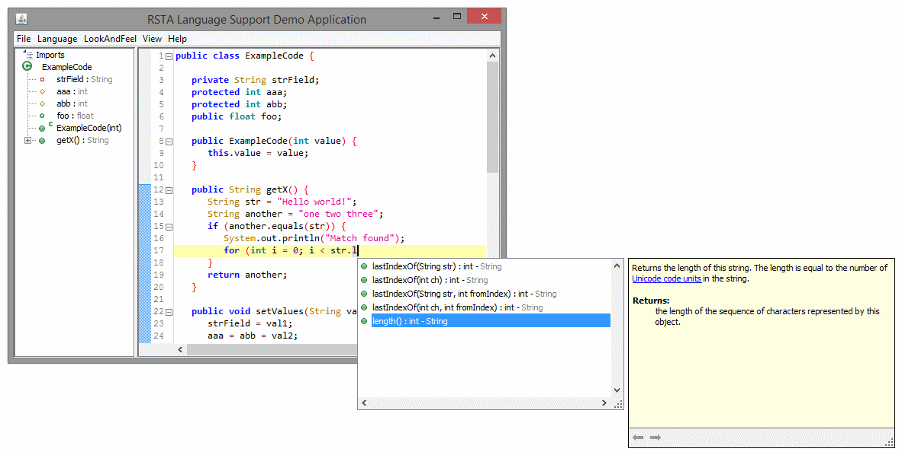

Strategies for live coding Java
Neil C Smith
Director at Eye Division Ltd
Online solutions for culture, education and third-sector
NetBeans, yes :-)
Java, no :-(
Artist & Technologist
Interactive spaces and projections
Open source Java projects
- Praxis LIVE - hybrid visual IDE for creative coding
- GStreamer 1.x bindings
- JAudioLibs - audio utilities (inc. JNAJack)
Strategies for live coding Java
Interactive programming in Java
Scripting Java in Java
Let your users extend your application at runtime
What? Why? How?
- Quick demo of Praxis LIVE
- Include
javacin your next application - An approach to live integration of custom code
Alt-TAB now!
Batteries compiler included
Visual RAD
Flowstone by DSP Robotics
Live IDE's / iterative coding
Juno - Interesting Development Environment for Julia
Manipulating data
Spreadsheet formulas?
Have you thought of everything?
Let's introduce scripting
User code as a first-class citizen
The best way to script Java is Java
An approach
How Praxis LIVE works
Architecture

Immutable types / no shared state
- PNumber, PString, PBoolean, PResource (URI)
- PArray, PMap
- ComponentInfo
- PReference??!
Java code to bytecode
Janino
http://janino.net
- Embedded Java compiler and infrastructure
- Expression, Script (method) and Class body evaluators
- Works entirely in memory
Class body evaluator
import java.util.*;
import net.neilcsmith.praxis.core.Argument;
import net.neilcsmith.praxis.core.ArgumentFormatException;
import net.neilcsmith.praxis.core.types.*;
import net.neilcsmith.praxis.code.userapi.*;
import static net.neilcsmith.praxis.code.userapi.Constants.*;
class SC extends net.neilcsmith.praxis.core.code.CoreCodeDelegate {
// user code here
}
- Doesn't use Java HotSwap functionality
- Each code iteration is a new Class
- ... in a new ClassLoader
- An advantage - no shared state
List<String> values;
void setup() {
values = new ArrayList<>();
}
void update() {
for (String value : values) {
}
}
List<String> values;
void setup() {
//values = new ArrayList<>();
}
void update() {
for (String value : values) {
}
}
An example
core:math:add
Architecture - part deux
Got class, now what?
Rules, what rules?
- Animation
- Audio streams
Problems
@P(1) @OnChange("updateState") String data;
void updateState() {
// handle data changing
}
@P(1) Property value;
void update() {
if (!value.isAnimating()) {
value.set(0).to(1).in(5)
.easing(d -> d * d)
.onFinish(this::finished);
}
}
void finished() {
// handle finished
}
Editing
NetBeans code editor
https://praxisintermedia.wordpress.com/2015/03/31/code-fragment-editing-in-netbeans-rcp/
Lightweight alternatives
JSyntaxPane
RSyntaxTextArea (http://fifesoft.com)
Thank you!
www.praxislive.org
https://github.com/praxis-live/